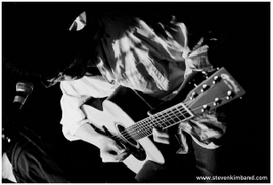

|
||||
Steven Kim
Band |
||||
|
 Ktown213: Hello Steve, please give us your 30 second intro! Don't forget to introduce your fellow band members as well.Steven Kim: We're an indy rock band hailing from Los Angeles, and we've been at this for about 2 years. I say "about" because we've had several spot shows back from 2001, but for all intents and purposes I'd like to mark our start as our first show here in L.A., back in May of 2003. We're a standard foursome, with Ken Chan on guitar, Woody Pak on bass and Tim Hwang on drums. And myself on vocals and guitar. At least on paper, and I'll leave it at that until the issue of the band name comes up! KT213: First off, the name of your band (Steven Kim Band) is straight to the point, to say the least. What made you decide on the name, and how did you band members feel about that? SK: Okay, here goes. Dave Matthew would attribute his band's name to just laziness and apologize for it. Well our reasons might be laziness too, but it's something a bit more. SKB is something in between a band and a solo act, like a John Mayer. I actually do all of the song writing then work with the guys to arrange it. Ken and I have written some songs together but we have yet to record them. As for the shows, only Ken and I have been staple members. Tim has played with SKB a long while but currently he's touring through February with a side project. Woody is always working on other side projects, of which SKB is only one. The point is, all of the guys wield far more talent than what SKB does alone, and the permanence of each of the members varies from season to season. Excluding me, of course, since I'm not allowed to leave. We have a lot of friends filling in for gigs and I am fortunate to be tapped into such a wealthy community of musicians. As for whether they mind or not... well my promoters have asked on several occasions for a more marketable band name, but we're content with it! Something novel about seeing such a common Korean name on the marquee of the Whisky. KT213: What kind of musical background did you have as a kid? SK: I have a classical background with the piano. And to this day nothing moves me like classical music. Growing up I poured my heart out to my piano, and it was therapy like the way a good cry at a support group can clear your insomnia out. So you have this in your life, and it becomes the haven for your emotions to remain alive. And you stay the romantic, well practiced at expressing your feelings and the need to do so. I think if you analyzed my song writing you couldn't ignore the classical roots, even though they play nothing like traditional classical music. In song structure and spirit, the melodrama with hot flares and all. KT213: Steven, you graduated from UCLA with a degree in Engineering? What happened with that? SK: I still have it. I never picked up my diploma but I have a letter that says I am an engineer. College was as challenging for me academically as it was emotionally. I was a dork acting like I was somebody, and those lessons I learned carry over to my adulthood. I will say that UCLA has a great computer science program, and it taught me how to approach a problem, which applies to web development or deconstructing the politics involved in a recording project. Most tangibly, indy music alone doesn't support a family, so I do use my computer skills for a day job which I also enjoy very much. KT213: Where can we see more of Steven Kim Band? Any upcoming projects for the band? SK: Well we're set to release the acoustic EP, "Acoustic Sessions" late October. I am currently meeting with various producers in the business to start up another major project, slated for a 2005 release. As for seeing us, we're always playing out. We have a free show on October 26 at the Key Club Plush Lounge, where we'll release AS, and we have a gig with all the boys at The Gig Hollywood on November 13. You should check with the band website for more accurate information. KT213: You're now a loving husband, a father of two daughters, and a family man. How do you balance your family life with your passion for music? SK: I think there's a misconception in our culture about raising kids, and this of course also among the single people. Some think children halt the rest of your life, and this simply isn't true. They become a part of your life and you become a part of theirs. They grow up watching you, and it's important to invite them into your life rather than cutting your life short in the name of parenting. So while my girls can't come to most of the shows because it's just too loud, they watch me recording in my home studio or writing out songs, and I sing to them all the time. I think it's neat that they grow up just thinking everyone makes music in their home! And most importantly, I have an amazing wife who supports me. We married younger than most do, and frankly we're reaping the gains from doing so. For a guy like me who was always preoccupied with girls, getting married was the most freeing thing that could happen to me. All of a sudden like 95% of my energy is returned to me, to pour into other endeavors. Like music.
KT213:
Where do you see yourself in 5 years?
|
||||
|
©2004 Ktown213.com. All Rights Reserved. |